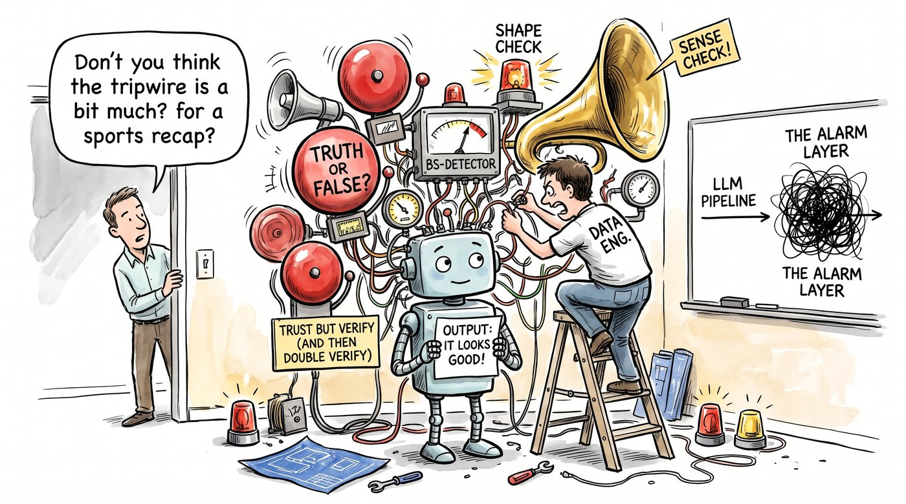

Trust, But Validate
There's a moment in every LLM project when the output starts looking really good. The JSON is clean, the fields are all there, and the tone is spot on. That's usually when I stop checking, and it's exactly when I should check harder.
Well-formed isn't the same as true
Language models are brilliant at producing things that look right. That's literally what they're trained to do. But "looks right" and "is right" are two different tests, and only one of them is free.
🏀 Here's a hypothetical I keep coming back to from the NBA analytics side of things. Say you ask a model to read a game recap and return each player's points, rebounds and assists as JSON. The recap mentions points and assists for one player but says nothing about rebounds. A careful human would leave rebounds blank. A model, wanting to fill the template, might just pop in a plausible number. It passes the schema, the types are correct, and it's still made up.
Treat it like a source system you don't control
Data engineering gave me a simple mental model for this. If a vendor sent me a file every day, I wouldn't load it straight into production. I'd check it at the door. LLM output deserves the same respect, maybe more, because a vendor file doesn't get creative.
So I split validation into two layers.

1. Shape checks. Is it valid JSON? Are the required fields present? Are numbers actually numbers? Are categories from the allowed list? Tools like Pydantic or JSON Schema, plus the structured-output features many model APIs now offer, handle a lot of this. This layer is cheap and catches the obvious breakages.
2. Sense checks. This is the layer people skip. Can each value be traced back to the input? If the model says 12 rebounds, does a "12" or "twelve" actually appear near that player's name in the source text? Do the parts add up, so that player points sum to the team total when you have it? Is the answer within a believable range? None of this needs to be fancy. A few plain rules catch a surprising amount.
Decide what happens when it fails
Validation without a plan for failures is just a nicer error message. I like a simple ladder:
- Retry once, ideally telling the model what failed ("rebounds isn't in the source text, so return null if it's not stated").
- Flag it for a human if it fails again. Don't loop forever and burn tokens.
- Never pass it through silently. A blank is honest. A confident guess is a liability.
Then the important bit: every failure goes into my eval set. The weird inputs that tripped the model up today become tomorrow's regression tests.
🧾 The accountant in me approves
This is really just vouching, the audit habit of taking a number in the report and tracing it back to the source document. If you can't find the invoice, you don't book the expense. If you can't find the rebound in the recap, you don't keep the number.
Where I've landed
I don't think the goal is to distrust the model. It's to make trust something the output earns at every step, not something it gets by default because the formatting is neat. Shape checks tell you it's well-formed. Sense checks tell you it's true. You need both.
In our data pipelines—whether we’re processing high-volume event streams in BigQuery or running automated extraction layers—the silent failure is always worse than a hard crash. A pipeline crash wakes you up immediately; a hallucinated metric or a subtly invented field sneaks into a downstream dashboard and quietly ruins a stakeholder review.
If we treat LLM orchestration with the same rigorous assertion testing and data contracts we apply to traditional ETL, we stop treating AI like magic and start treating it like a very fast, occasionally over-confident junior analyst whose work still needs a proper cross-check before it hits production.